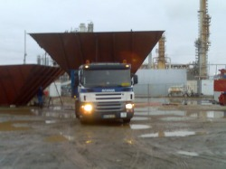
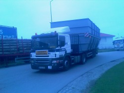
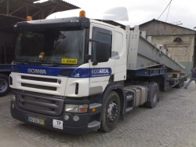
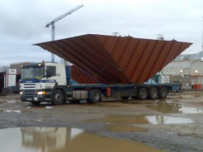

TRANSPORTES RODOVIÁRIOS
A carga muda.
O cuidado acompanha.
Transportes rodoviários de mercadorias, da distribuição às cargas de grandes dimensões.


Rodareal
Comece pela carga.
Trace o percurso.
A Rodareal apresenta soluções de transporte no mercado ibérico. O local de recolha, o destino e as características da carga ajudam a preparar a conversa.
Ver os serviçosPor onde começar
O que procura?
Escolha a área e veja o que partilhar para preparar a conversa.

Transporte de mercadorias
Serviços de transporte e distribuição adequados às características do pedido.
Cargas de grandes dimensões
Equipamentos apresentados para o transporte de objetos e cargas de grandes dimensões.

Transporte com grua
O website atual apresenta semirreboque porta-máquinas e com grua. A solução é confirmada pela equipa.
Imagens
Mais perto
dos pormenores.
Explore uma seleção das imagens publicadas pela empresa e leve uma referência para a conversa.
Explorar imagens